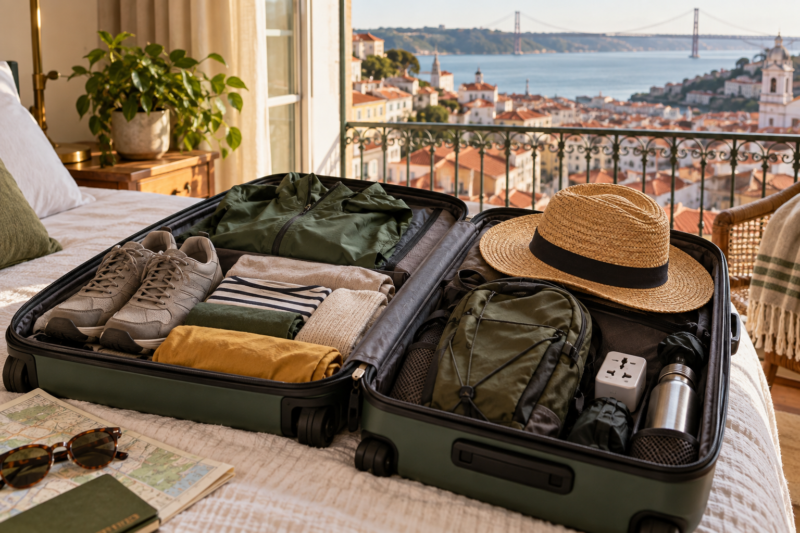
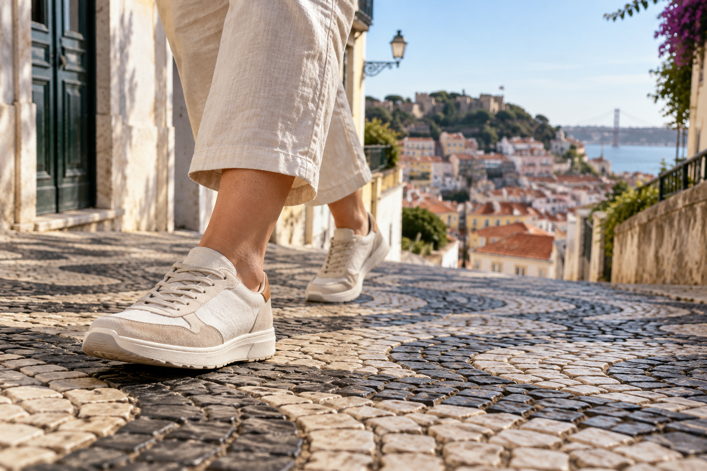
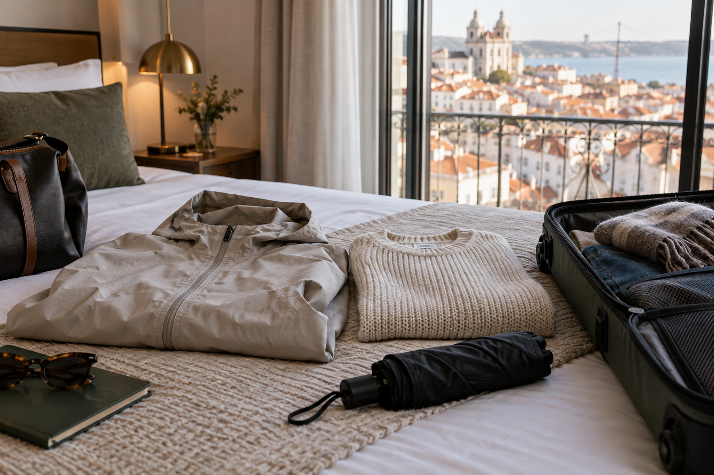

Portugal Packing List: What to Pack for Every Season
Packing for Portugal looks easy until one trip includes Lisbon's steep streets, cooler evenings in Porto, a windy Atlantic coast, and warm days in the Algarve. Packing only for the temperature on your weather app can leave you carrying the wrong shoes, too many heavy clothes, or no useful layer when conditions change.
When I build a Portugal packing list for RoamPlans, I focus on route, season, walking, and luggage size before adding individual items. Most first-time visitors do not need a large suitcase full of backup clothes. They need comfortable shoes, useful layers, sun and rain protection, the right electronics, and enough flexibility to handle different parts of Portugal without overpacking.
Portugal Packing List at a Glance

Start with these items for almost any mainland Portugal trip:
Clothing
- ✓Comfortable everyday tops
- ✓Lightweight pants or trousers
- ✓Shorts in warm weather
- ✓Light sweater or mid-layer
- ✓Light jacket
- ✓Underwear
- ✓Socks
- ✓Sleepwear
- ✓One slightly smarter outfit if needed
Footwear
- ✓Comfortable walking shoes
- ✓Sandals or breathable shoes in warm weather
- ✓Beach shoes or flip-flops if your route includes the coast
Weather Protection
- ✓Sunglasses
- ✓Sunscreen
- ✓Hat
- ✓Light rain jacket
- ✓Compact umbrella if useful for your season
Travel Essentials
- ✓Passport
- ✓Wallet
- ✓Credit and debit cards
- ✓Small amount of euros
- ✓Phone
- ✓Charger
- ✓Plug adapter
- ✓Portable battery
- ✓Prescription medication
- ✓Copies of important travel information
Day Bag Items
- ✓Reusable water bottle
- ✓Phone
- ✓Portable charger
- ✓Sunglasses
- ✓Sunscreen
- ✓Light layer
- ✓Tissues
- ✓Small amount of cash
- ✓Hotel information
You will not need every optional item on every trip.
Your final list should change based on when and where you travel.
Pack for Your Portugal Route, Not Just the Country
Portugal's climate changes from region to region.
Northern Portugal is generally cooler than southern Portugal. Coastal areas are also affected by the Atlantic, while inland areas can become hotter during summer.
That means a Lisbon, Porto, and Algarve itinerary may need more variety than a trip based only in Lisbon.
Before packing, write down every main stop on your route.
For example:
Lisbon → Porto → Algarve
Then ask what each part of the trip requires.
Lisbon
Your main packing concern is usually walking.
Lisbon includes:
- ✓Hills
- ✓Cobbled streets
- ✓Stairs
- ✓Long sightseeing days
Good shoes matter more here than packing several fashionable pairs.
Porto
Porto can feel cooler and wetter than Lisbon.
A light rain layer and something warmer for evenings can be useful, especially outside summer.
Algarve
The Algarve may require:
- ✓Swimwear
- ✓Sun protection
- ✓Beach footwear
- ✓Lightweight clothes
- ✓Coastal layer for wind
Do not assume every Algarve day requires only shorts and swimwear.
Douro Valley
Your clothing should suit:
- ✓Outdoor sightseeing
- ✓Vineyard visits
- ✓Walking
- ✓Warm daytime conditions depending on season
Comfortable casual clothing usually works better than formal outfits.
How Much Clothing Should You Pack?
The answer depends more on laundry than trip length.
You do not need 14 complete outfits for a 14-day trip.
For many travelers, packing around 5 to 7 days of clothing and doing laundry once works better.
This can reduce:
- ✓Suitcase weight
- ✓Hotel transfers
- ✓Train luggage problems
- ✓Unnecessary clothing choices
Example for a 7–10 Day Trip
A simple starting point could be:
- ✓5–7 tops
- ✓2–3 bottoms
- ✓1 light sweater
- ✓1 light jacket
- ✓7 pairs of underwear
- ✓5–7 pairs of socks
- ✓1 sleepwear set
- ✓1 smarter outfit if needed
- ✓1–2 pairs of main shoes
Adjust this for your personal routine.
Some travelers prefer to rewear clothing.
Others want a clean outfit every day.
The goal is not to follow an exact number. It is to avoid packing items that have no clear use.
Do You Need Dressy Clothes in Portugal?
Most first-time sightseeing trips do not require formal clothing.
Casual, neat clothes work for many:
- ✓Restaurants
- ✓Cafés
- ✓City sightseeing
- ✓Wine experiences
- ✓Hotel stays
You may want one smarter outfit if you plan:
- ✓Fine dining
- ✓Special dinner
- ✓Upscale hotel
- ✓Formal event
Do not pack several dressy outfits unless your actual itinerary needs them.
The Most Important Item: Comfortable Walking Shoes

If you prioritize only one clothing decision, make it footwear.
Portugal's historic areas can be hard on your feet.
Lisbon and Porto include many:
- ✓Cobbled streets
- ✓Slopes
- ✓Steps
- ✓Uneven surfaces
New shoes that feel comfortable for 10 minutes at home can become painful after several hours.
Wear your shoes before the trip.
What Type of Shoes Should You Pack?
For most trips, two pairs are enough.
Pair 1: Main Walking Shoes
Choose shoes with:
- ✓Comfortable support
- ✓Good grip
- ✓Enough room for long walking days
- ✓A sole that handles uneven streets
Running shoes or comfortable walking sneakers can work well.
Pair 2: Lightweight Backup
Depending on the season, this could be:
- ✓Sandals
- ✓Casual shoes
- ✓Lightweight sneakers
- ✓Beach footwear
Your second pair should serve a different purpose from your main walking shoes.
Packing three similar pairs usually adds weight without adding much value.
Should You Pack Heels?
Only if you know you will use them.
Historic streets and cobbles are not ideal for thin heels.
For evening wear, a stable flat shoe, low heel, or comfortable dress shoe is often easier.
Do not bring formal footwear simply because you think Europe requires it.
What to Pack for Portugal in Spring
Spring requires flexible clothing.
You may have a warm afternoon followed by a cooler evening or a wet day.
The best approach is layering.
Spring Clothing List
Pack:
- ✓Short-sleeve tops
- ✓One or two long-sleeve tops
- ✓Lightweight pants
- ✓Light sweater
- ✓Light jacket
- ✓Comfortable walking shoes
- ✓Light rain jacket
- ✓Sunglasses
- ✓Compact umbrella if desired
Why Layers Work Better
Instead of packing one heavy coat, combine lighter items.
For example:
T-shirt + sweater + light jacket
You can remove layers during warmer parts of the day.
This is much easier than carrying a heavy coat when the afternoon becomes mild.
March Packing List
March can still feel changeable.
Prioritize:
- ✓Layers
- ✓Closed walking shoes
- ✓Light rain protection
- ✓Medium-weight sweater
- ✓Light jacket
You probably do not need a full winter wardrobe for a normal city trip, but packing only summer clothing is risky.
April Packing List
April still benefits from layering.
Pack:
- ✓Light tops
- ✓Comfortable pants
- ✓Sweater
- ✓Rain layer
- ✓Walking shoes
- ✓Sunglasses
If your route includes Porto or northern Portugal, keep your warmer layer easy to reach.
May Packing List
May usually allows a lighter suitcase.
Consider:
- ✓T-shirts
- ✓Lightweight pants
- ✓Shorts if you wear them
- ✓Light sweater
- ✓Light jacket
- ✓Walking shoes
- ✓Sunglasses
- ✓Hat
- ✓Sunscreen
Keep one light rain option instead of assuming every day will stay dry.
If you are choosing travel dates and still need the wider weather comparison, Best Time to Visit Portugal: Weather, Crowds and Costs is the natural supporting guide.
What to Pack for Portugal in Summer
Summer packing should focus on:
- ✓Heat
- ✓Sun
- ✓Walking
- ✓Coast
- ✓Lightweight clothing
Avoid filling your suitcase with heavy fabrics.
Summer Clothing List
Pack:
- ✓Lightweight T-shirts
- ✓Breathable shirts
- ✓Shorts
- ✓Lightweight trousers
- ✓Summer dresses if preferred
- ✓Swimwear
- ✓Comfortable walking shoes
- ✓Sandals
- ✓Hat
- ✓Sunglasses
- ✓Sunscreen
- ✓Light evening layer
Your exact list changes if most of the trip is in cities rather than at the beach.
June Packing List
June works well with lightweight clothing.
Pack a mix of:
- ✓T-shirts
- ✓Light pants
- ✓Shorts
- ✓Walking shoes
- ✓Sandals
- ✓Sun protection
- ✓Swimwear for coastal trips
- ✓One light layer
A light layer is still useful for evenings and windy coastal areas.
July Packing List
Heat and sun become more important.
Prioritize:
- ✓Breathable fabrics
- ✓Loose clothing
- ✓Hat
- ✓Sunglasses
- ✓Sunscreen
- ✓Reusable water bottle
- ✓Comfortable shoes
- ✓Swimwear if needed
Avoid thick clothing that takes up suitcase space without serving a clear purpose.
August Packing List
August needs much of the same summer kit.
The main goal is staying comfortable during hot sightseeing days.
Choose clothing that is:
- ✓Lightweight
- ✓Easy to wash
- ✓Quick to dry
- ✓Comfortable for walking
If your trip includes religious sites or places where you prefer more coverage, include one lightweight outfit that covers shoulders and legs without being heavy.
Do You Need a Jacket in Portugal During Summer?
Usually, a heavy jacket is unnecessary for a standard mainland summer trip.
A light layer can still be useful for:
- ✓Cooler evenings
- ✓Windy coast
- ✓Air-conditioned spaces
- ✓Early mornings
- ✓Northern Portugal
One lightweight layer is usually enough.
What to Pack for the Algarve in Summer
A beach-focused Algarve stay needs a few extra items.
Pack:
- ✓2 swimsuits if swimming often
- ✓Beach cover-up
- ✓Sandals or flip-flops
- ✓Hat
- ✓Sunglasses
- ✓Sunscreen
- ✓Reusable water bottle
- ✓Lightweight day clothes
- ✓Small beach or day bag
You may also want a quick-dry towel if your accommodation does not provide beach towels.
Check before packing one because towels take up a lot of luggage space.
Do You Need Beach Gear From Home?
Usually, keep it simple.
Large items such as:
- ✓Beach umbrellas
- ✓Heavy towels
- ✓Beach chairs
are rarely worth flying across the Atlantic with.
Take small personal items and get larger beach equipment locally if needed.
Pack Sun Protection Even for City Trips
Sun protection is not only for the Algarve.
Long sightseeing days in Lisbon, Porto, Sintra, or the Douro Valley can keep you outside for hours.
Useful items include:
- ✓Sunglasses
- ✓Sunscreen
- ✓Hat
- ✓Water bottle
Pack sunscreen you know works for your skin, especially if you are particular about the brand or formula.
Use a Small Day Bag Instead of Carrying Everything
Your main suitcase should stay at the hotel.
For daily sightseeing, use a small:
- ✓Backpack
- ✓Cross-body bag
- ✓Daypack
Carry only what you expect to use.
A normal day bag might contain:
- ✓Phone
- ✓Wallet
- ✓Water
- ✓Portable battery
- ✓Sunglasses
- ✓Sunscreen
- ✓Light layer
A lighter bag makes long walking days much easier.
What to Pack for Portugal in Fall
Fall packing depends heavily on whether you visit in September or late November.
September can still feel close to summer in many parts of Portugal. By November, cooler temperatures and rain become more important.
The safest approach is to pack light layers instead of one heavy outfit.
Fall Clothing List
Pack:
- ✓Short-sleeve tops
- ✓1–2 long-sleeve tops
- ✓Lightweight pants
- ✓Jeans if you prefer them
- ✓Light sweater
- ✓Light or medium jacket
- ✓Comfortable walking shoes
- ✓Light rain jacket
- ✓Sunglasses
- ✓Compact umbrella if useful
If the Algarve is part of an early-fall trip, add swimwear.
September Packing List
September can still be warm, especially in Lisbon and southern Portugal.
Pack:
- ✓T-shirts
- ✓Lightweight trousers
- ✓Shorts
- ✓Comfortable walking shoes
- ✓Sandals if useful
- ✓Swimwear for the coast
- ✓Sun hat
- ✓Sunglasses
- ✓Sunscreen
- ✓One light evening layer
Do not pack only summer clothing if Porto or northern Portugal is part of your route.
A light jacket or sweater can still be useful.
October Packing List
October needs more flexibility.
Your suitcase should include:
- ✓T-shirts
- ✓Long-sleeve tops
- ✓Lightweight pants
- ✓Sweater
- ✓Light jacket
- ✓Rain layer
- ✓Closed walking shoes
- ✓Sunglasses
You may still use lighter clothes during warm afternoons.
Keep a layer in your day bag for evenings.
November Packing List
November requires more attention to rain and cooler conditions.
Pack:
- ✓Long-sleeve tops
- ✓Pants
- ✓Sweater
- ✓Medium-weight jacket
- ✓Waterproof or water-resistant outer layer
- ✓Comfortable closed shoes
- ✓Extra socks
- ✓Compact umbrella
If Porto is included, rain protection becomes more useful.
Avoid bringing several heavy sweaters. One or two good layers are easier to combine.
What to Pack for Portugal in Winter

Winter packing should focus on:
- ✓Layers
- ✓Rain protection
- ✓Comfortable closed shoes
- ✓Cooler evenings
You usually do not need the same heavy winter clothing required for very cold northern European destinations.
However, Portugal can feel damp and chilly, especially when wind and rain are added.
Winter Clothing List
Pack:
- ✓Long-sleeve tops
- ✓Comfortable pants
- ✓Warm sweater
- ✓Light thermal layer if you get cold easily
- ✓Medium-weight jacket
- ✓Waterproof outer layer
- ✓Closed walking shoes
- ✓Warm socks
- ✓Compact umbrella
- ✓Light scarf
A small scarf takes little space and can make windy evenings more comfortable.
December Packing List
For December, prioritize:
- ✓Long sleeves
- ✓Sweater
- ✓Jacket
- ✓Closed shoes
- ✓Rain protection
- ✓Light scarf
If you are visiting only Lisbon and southern Portugal, you may not need a very heavy coat.
If your route includes Porto or northern Portugal, pack a warmer layer.
January Packing List
January is one of the months when a proper layering system matters most.
Consider:
- ✓Base layer
- ✓Long-sleeve shirt
- ✓Sweater
- ✓Jacket
- ✓Waterproof outer layer
This is better than packing one very bulky coat that takes up half your suitcase.
February Packing List
February remains a winter month, so keep:
- ✓Closed walking shoes
- ✓Long pants
- ✓Sweater
- ✓Rain layer
- ✓Jacket
You may also get mild days.
Layers allow you to remove clothing instead of being stuck in a heavy winter outfit.
Do You Need Waterproof Shoes in Portugal?
Not for every trip.
For a dry summer visit, normal walking shoes are usually enough.
For a fall or winter trip, water-resistant shoes can be useful if the forecast includes repeated rain.
You do not need heavy hiking boots for normal Lisbon or Porto sightseeing.
Choose footwear based on your activities.
Should You Pack an Umbrella or Rain Jacket?
A light rain jacket is often more practical for sightseeing because it leaves your hands free.
A compact umbrella can still be useful in cities.
If luggage space is limited, choose one unless you know you prefer both.
A rain jacket becomes especially useful when your day includes:
- ✓Long walks
- ✓Day trips
- ✓Train stations
- ✓Outdoor viewpoints
Portugal Toiletries Packing List
You can buy normal toiletries in Portugal, so you do not need to bring full-size bottles of everything.
A basic toiletry kit may include:
- ✓Toothbrush
- ✓Toothpaste
- ✓Deodorant
- ✓Shampoo
- ✓Conditioner
- ✓Face wash
- ✓Moisturizer
- ✓Razor
- ✓Hairbrush or comb
- ✓Sunscreen
- ✓Lip balm
- ✓Personal hygiene products
Use travel-size bottles when possible.
This reduces both weight and space.
What Toiletries Can You Buy in Portugal?
Common personal-care products are widely available in:
- ✓Pharmacies
- ✓Supermarkets
- ✓Shopping centers
- ✓Convenience stores
Do not fill your suitcase with basic items you can easily replace.
Bring your own product when:
- ✓Your skin is sensitive
- ✓You need a specific formula
- ✓The product is prescription-based
- ✓You know substitutes do not work well for you
Medication Packing List
Bring enough prescription medication for your full trip.
Keep medication in your carry-on rather than checked luggage when possible.
Useful items may include:
- ✓Prescription medicine
- ✓Pain relief
- ✓Allergy medicine
- ✓Motion-sickness medicine if needed
- ✓Small first-aid items
- ✓Blister treatment
Portugal involves a lot of walking for many visitors, so blister care can be more useful than expected.
Keep Prescription Medicine Clearly Packed
Keep medication in its normal labeled packaging when practical.
For important prescriptions, having a copy of the prescription or doctor's information can be useful.
Do not separate essential medication from yourself during the flight.
Electronics to Pack for Portugal
Most travelers need only a small electronics kit.
Pack:
- ✓Phone
- ✓Phone charger
- ✓Plug adapter
- ✓Portable battery
- ✓Charging cable
- ✓Headphones
- ✓Camera if you actually use one
Optional items may include:
- ✓Tablet
- ✓Laptop
- ✓Smartwatch charger
- ✓E-reader
Do not pack electronics simply because you own them.
Every device adds:
- ✓Weight
- ✓Charger
- ✓Cable
- ✓Security concern
What Plug Adapter Do You Need for Portugal?
Portugal uses European-style Type C and Type F sockets.
Travelers from the United States will normally need a plug adapter.
Portugal's electricity supply is around 230 volts at 50 Hz.
Check your charger or device label before plugging it in.
Many modern phone, laptop, and camera chargers accept a wide voltage range.
Look for wording similar to:
Input: 100–240V
If your device supports that range, you usually need only a plug adapter.
Adapter vs Voltage Converter
These are different products.
Plug Adapter
Changes the physical shape of the plug.
Voltage Converter
Changes electrical voltage.
A plug adapter does not convert 230V electricity into U.S. voltage.
This matters most for appliances that may not support dual voltage.
Common examples can include:
- ✓Hair dryers
- ✓Curling irons
- ✓Straighteners
- ✓Electric grooming devices
Check the device label instead of guessing.
Should You Bring a Hair Dryer?
Check your accommodation first.
Many hotels provide one.
A U.S. hair dryer can create unnecessary problems if it does not support European voltage.
Leaving it at home can also free a lot of suitcase space.
Should You Bring a Portable Charger?
Yes, it can be very useful.
Travel days can involve heavy phone use for:
- ✓Maps
- ✓Photos
- ✓Tickets
- ✓Train information
- ✓Translation
- ✓Messages
A portable battery gives you a backup when you cannot easily reach a power outlet.
Keep it in your carry-on when flying, following airline battery rules.
Do You Need a Camera?
Only if photography is important enough that you will actually carry it.
Modern phones are enough for many travelers.
A separate camera also means carrying:
- ✓Batteries
- ✓Memory cards
- ✓Charger
- ✓Extra weight
Do not bring expensive equipment that will stay in the hotel.
Portugal Travel Documents Packing List
Keep your most important documents together before departure.
Your travel document list may include:
- ✓Passport
- ✓Flight confirmations
- ✓Hotel bookings
- ✓Train reservations
- ✓Rental car confirmation
- ✓Travel insurance information
- ✓Emergency contacts
- ✓Copies of important documents
You do not need to print every email.
Keep key information available both digitally and offline.
Make a Passport Backup
Keep:
- ✓A digital passport copy
- ✓Another copy separate from the original
A copy does not replace your passport.
It can make identification and replacement steps easier if the original is lost.
Keep Your First Hotel Address Offline
This is especially useful on arrival.
Save the full hotel name and address before leaving home.
Your phone may not have working mobile data immediately after landing.
A screenshot or offline note solves that problem.
What Should Go in Your Carry-On?
Your carry-on should contain anything you cannot easily replace during the first day.
Keep these with you:
- ✓Passport
- ✓Wallet
- ✓Phone
- ✓Charger
- ✓Prescription medication
- ✓Valuable electronics
- ✓Important documents
- ✓One basic change of clothing if useful
Do not place essential medication or your only phone charger in checked baggage.
What Should Go in Checked Luggage?
Checked luggage can contain:
- ✓Most clothing
- ✓Larger toiletries
- ✓Extra shoes
- ✓Non-essential items
Avoid checking valuables that would be difficult or expensive to replace.
Personal Item Packing List for the Flight
Your small personal bag can contain:
- ✓Passport
- ✓Wallet
- ✓Phone
- ✓Headphones
- ✓Charging cable
- ✓Portable battery
- ✓Medication
- ✓Water bottle after security
- ✓Light layer
- ✓Travel documents
- ✓Small snack
Keep this bag organized.
You may need several of these items before reaching your hotel.
What Bag Should You Use for Daily Sightseeing?
A small cross-body bag or daypack works well for many travelers.
Look for:
- ✓Comfortable straps
- ✓Secure closures
- ✓Lightweight design
- ✓Enough room for water
- ✓Easy access to your phone
Avoid carrying a large travel backpack through cities unless you actually need the space.
Should You Use a Money Belt?
Most travelers do not need to carry all valuables in a money belt.
The more useful rule is to keep important items secure and avoid putting all payment methods in one place.
For example:
Main card in wallet
Backup card stored separately
This gives you another option if a wallet is lost.
What to Pack for a Portugal Road Trip
If you are renting a car, add a few practical items:
- ✓Phone mount if you prefer one
- ✓Charging cable
- ✓Portable battery
- ✓Sunglasses
- ✓Reusable water bottle
- ✓Small day bag
- ✓Offline maps
- ✓Light jacket
Do not pack large road-trip equipment unless you know you will use it.
Most normal supplies can be bought locally.
What to Pack for Train Travel in Portugal
Train travel becomes easier with manageable luggage.
Useful items include:
- ✓Small suitcase or backpack
- ✓Easy-access ticket
- ✓Water
- ✓Light snack
- ✓Phone charger or battery
- ✓Small valuables bag
You should be able to lift and move your own luggage comfortably.
That becomes especially useful when platforms, stairs, or hotel streets are involved.
What to Pack for Sintra
For a Sintra day trip, prioritize:
- ✓Comfortable walking shoes
- ✓Light layer
- ✓Rain protection if needed
- ✓Water
- ✓Portable charger
- ✓Small day bag
The combination of hills, walking, and changing conditions makes practical footwear more useful than dressy clothing.
What to Pack for the Douro Valley
For a normal Douro Valley visit, choose:
- ✓Comfortable casual clothes
- ✓Walking shoes
- ✓Sun protection
- ✓Water
- ✓Light layer
- ✓Small day bag
If you have a specific winery or restaurant reservation, check whether you want a slightly smarter outfit.
Formal clothing is usually unnecessary for a normal sightseeing day.
Laundry Can Cut Your Packing in Half
Laundry is one of the easiest ways to reduce luggage on a 10- or 14-day trip.
Options may include:
- ✓Hotel laundry
- ✓Self-service laundromat
- ✓Apartment washing machine
- ✓Hand washing a few items
If you know you can wash clothes halfway through the trip, you do not need two weeks of outfits.
That matters even more if you are traveling by train between several cities.
What Not to Pack for Portugal
Avoid items that add weight without solving a real need.
Common examples include:
- ✓Too many shoes
- ✓Heavy towels
- ✓Full-size toiletries
- ✓Several formal outfits
- ✓Large amounts of cash
- ✓Bulky electronics
- ✓Clothes you have never worn before
- ✓Full winter gear for a normal summer trip
- ✓Beach equipment you can get locally
Every item should have a clear purpose.
If you cannot explain when you will use it, consider leaving it home.
Can You Travel Portugal With Carry-On Only?
Yes. For many 5- to 10-day Portugal trips, carry-on-only travel is practical.
It works especially well if you:
- ✓Rewear some clothing
- ✓Pack neutral pieces that match easily
- ✓Use travel-size toiletries
- ✓Take only two pairs of shoes
- ✓Do laundry during longer trips
Carry-on travel can make trains, hotel changes, stairs, and cobbled streets much easier.
The main challenge is not fitting clothes.
It is controlling shoes, toiletries, and unnecessary electronics.
Carry-On Packing List for Portugal
A simple carry-on setup could include:
Clothing
- ✓5 tops
- ✓2–3 bottoms
- ✓1 light sweater
- ✓1 jacket or rain layer
- ✓1 sleepwear set
- ✓5–7 underwear
- ✓5 pairs of socks
- ✓1 smarter outfit if needed
Shoes
- ✓1 main walking pair
- ✓1 lightweight second pair
Wear the larger shoes during the flight.
Toiletries
Use small containers for:
- ✓Toothpaste
- ✓Shampoo
- ✓Conditioner
- ✓Face wash
- ✓Moisturizer
Buy replacements locally if necessary.
Electronics
Keep it simple:
- ✓Phone
- ✓Charger
- ✓Plug adapter
- ✓Portable battery
- ✓Headphones
This setup is enough for many normal sightseeing trips.
Packing for a 5-Day Portugal Trip
Five days does not require a large suitcase.
A practical clothing setup might be:
- ✓4–5 tops
- ✓2 bottoms
- ✓1 light layer
- ✓5 underwear
- ✓4–5 pairs of socks
- ✓1 sleepwear set
- ✓2 pairs of shoes maximum
Add weather-specific items only where needed.
For a short trip, carry-on luggage should be enough for many travelers.
Packing for a 7-Day Portugal Trip
A one-week trip still does not require seven completely different outfits.
Start with:
- ✓5–6 tops
- ✓2–3 bottoms
- ✓1–2 layers
- ✓7 underwear
- ✓5–7 pairs of socks
- ✓1 sleepwear set
- ✓2 pairs of shoes
If beach time is included, add:
- ✓Swimwear
- ✓Sandals
- ✓Beach cover-up
The goal is to create outfits from a small number of pieces.
Packing for a 10-Day Portugal Trip
For ten days, you have two choices:
Pack more
or:
Do laundry once
I prefer the second approach for travelers moving between cities.
A lighter suitcase is easier on trains and hotel transfers.
You can pack roughly the same amount as a seven-day trip and plan one laundry stop around the middle.
Packing for a 14-Day Portugal Trip
A two-week trip still does not require two weeks of clothing.
Pack for roughly one week.
Then plan laundry.
This keeps your luggage manageable, especially if you are visiting several places.
A 14-day trip with:
Lisbon → Porto → Algarve
is much easier with one medium suitcase than a large bag packed with 14 separate outfits.
Suitcase or Backpack for Portugal?
Both can work.
The right choice depends on your route.
Suitcase
Better if you:
- ✓Stay in hotels
- ✓Use trains
- ✓Have fewer hotel changes
- ✓Prefer organized packing
Travel Backpack
Better if you:
- ✓Move often
- ✓Use stairs frequently
- ✓Stay in hostels
- ✓Prefer hands-free travel
However, a heavy backpack can become uncomfortable during long station transfers.
Choose the bag you can manage without help.
Hard-Shell or Soft-Shell Suitcase?
There is no clear winner.
Hard-Shell
Useful for:
- ✓Better structure
- ✓Protecting fragile items
- ✓Easy cleaning
Soft-Shell
Useful for:
- ✓Flexible packing
- ✓External pockets
- ✓Slight expansion
Wheel quality matters more than suitcase material for many Portugal trips.
Cobbled streets are not friendly to weak suitcase wheels.
Choose Luggage You Can Lift Yourself
This is one of the best packing rules for a multi-city Portugal trip.
You may need to lift your bag:
- ✓Onto a train
- ✓Up hotel steps
- ✓Into luggage storage
- ✓Across station platforms
Do not pack a suitcase that becomes difficult to move once fully loaded.
Packing Cubes: Useful or Unnecessary?
Packing cubes are optional.
They can help organize:
- ✓Tops
- ✓Underwear
- ✓Beachwear
- ✓Laundry
They do not reduce the actual weight of your suitcase.
Use them if they help you stay organized.
Skip them if they encourage you to pack more.
Should You Pack a Reusable Water Bottle?
Yes, if you normally use one.
A lightweight bottle is useful during:
- ✓City walks
- ✓Train trips
- ✓Day trips
- ✓Beach days
Avoid a heavy insulated bottle if suitcase weight matters more than keeping drinks cold for hours.
Should You Pack a Travel Towel?
Usually, no.
Hotels normally provide bath towels.
For beach trips, first check whether your accommodation provides beach towels.
A full-size travel towel can still take meaningful suitcase space.
Bring one only if your accommodation setup makes it useful.
Should You Pack a Neck Pillow?
Only if you already know you use one.
Travel pillows are bulky.
If you rarely use one on flights, it may become another item you carry around Portugal for no reason.
Should You Pack an Anti-Theft Bag?
You do not need a special bag simply because you are visiting Portugal.
A secure everyday bag is usually enough.
Useful features include:
- ✓Zippers
- ✓Cross-body strap
- ✓Internal pocket
- ✓Comfortable fit
The bigger rule is to stay aware of your belongings in busy tourist areas.
What Women May Want to Pack
There is no separate required women's packing list, but some travelers may find these items useful:
- ✓Lightweight dress
- ✓Comfortable sandals
- ✓Hair ties
- ✓Personal hygiene products
- ✓Light scarf
- ✓Small cross-body bag
If you use hair styling tools, check their voltage before bringing them.
A U.S. plug shape can be adapted.
Incorrect voltage cannot be fixed by a simple plug adapter.
What Men May Want to Pack
A simple men's setup might include:
- ✓T-shirts
- ✓Lightweight button-up shirt
- ✓Shorts
- ✓Lightweight trousers
- ✓Walking shoes
- ✓Casual second shoes
- ✓Light sweater
- ✓Jacket
One collared shirt can cover a nicer dinner without requiring formal clothing.
What Families Should Pack for Portugal
Families should focus on convenience rather than bringing everything from home.
Useful items can include:
- ✓Children's medication
- ✓Sun protection
- ✓Refillable bottles
- ✓Small snacks
- ✓Lightweight extra clothing
- ✓Wet wipes
- ✓Portable charger
- ✓Child comfort item
Avoid carrying a large supply of normal products you can buy in Portugal.
Packing for Children
Children may need extra clothing because spills happen.
For younger children, consider:
- ✓One extra outfit in the day bag
- ✓Sun hat
- ✓Comfortable shoes
- ✓Light layer
- ✓Swimwear if needed
Keep one change of clothing in carry-on luggage during the flight.
Packing for Older Travelers
Comfort should control the list.
Prioritize:
- ✓Supportive shoes
- ✓Easy layers
- ✓Medication
- ✓Light day bag
- ✓Water bottle
- ✓Rain protection where relevant
Do not pack heavy items that make luggage difficult to manage.
If you use mobility equipment or medical devices, check airline and accommodation requirements before departure.
Packing for a Portugal Beach Trip
A beach-focused trip needs a slightly different setup.
Add:
- ✓2 swimsuits
- ✓Cover-up
- ✓Sandals
- ✓Hat
- ✓Sunglasses
- ✓Sunscreen
- ✓Small beach bag
- ✓Lightweight clothes
You may also want:
- ✓Waterproof phone pouch
- ✓Small dry bag
- ✓Quick-dry clothing
Avoid packing large beach equipment.
Packing for a Portugal City Trip
For Lisbon and Porto, focus on:
- ✓Walking shoes
- ✓Light day bag
- ✓Layers
- ✓Rain protection where needed
- ✓Portable battery
- ✓Water bottle
You will probably use these items much more than beach equipment or formal clothing.
Packing for a Portugal Road Trip
Road trips give you slightly more luggage freedom because you do not carry bags through every station.
Still avoid overpacking.
Keep valuables out of sight when leaving the vehicle.
Do not treat the rental car as permanent storage for:
- ✓Passport
- ✓Money
- ✓Laptop
- ✓Camera
Take important valuables with you.
Packing for a Portugal Train Trip
Train travelers should focus on luggage size and mobility.
Choose a bag that:
- ✓Fits easily through stations
- ✓Can be lifted
- ✓Can be moved quickly
- ✓Does not require several separate pieces
One main bag plus one small personal bag is easier than managing three or four loose bags.
Common Portugal Packing Mistakes
Packing Too Many Shoes
Shoes take a large amount of space.
Most travelers need two pairs, not five.
Wearing New Shoes
Do not test new walking shoes on your first day in Lisbon.
Break them in before travel.
Packing Only for the Algarve
A multi-region trip can include very different conditions.
Beach clothes alone may not work well in Porto.
Packing Only Heavy Clothes for Winter
Layers give you more flexibility than several bulky sweaters.
Forgetting a Plug Adapter
U.S. plugs do not fit normal Portuguese sockets.
Pack an adapter before departure.
Assuming an Adapter Changes Voltage
It does not.
Check the voltage rating on electrical appliances.
Bringing Too Many Toiletries
Basic products are easy to buy locally.
Bring only what you need or cannot easily replace.
Packing a Large Towel Without Checking the Hotel
It may take up valuable suitcase space for no reason.
Carrying All Cards and Cash Together
Keep a backup payment method somewhere separate.
Putting Essential Medication in Checked Luggage
Keep important medication with you during travel.
Packing for Photos Instead of Real Activities
A beautiful outfit has little value if you cannot comfortably walk in it.
Pack around the activities you will actually do.
Final Portugal Packing Checklist
Use this list before closing your suitcase.
Documents and Money
- ✓Passport
- ✓Flight details
- ✓Hotel information
- ✓Train or car bookings
- ✓Insurance information if applicable
- ✓Main payment card
- ✓Backup card
- ✓Small cash amount
- ✓Document copies
Clothing
- ✓Everyday tops
- ✓Bottoms
- ✓Underwear
- ✓Socks
- ✓Sleepwear
- ✓Light sweater
- ✓Jacket or rain layer
- ✓One smarter outfit if needed
Shoes
- ✓Main walking shoes
- ✓Second lightweight pair
- ✓Sandals if useful
Weather Items
- ✓Sunglasses
- ✓Hat
- ✓Sunscreen
- ✓Rain protection
- ✓Light layer
Electronics
- ✓Phone
- ✓Charger
- ✓Plug adapter
- ✓Portable battery
- ✓Headphones
- ✓Extra device chargers if needed
Toiletries
- ✓Toothbrush
- ✓Toothpaste
- ✓Deodorant
- ✓Skin care
- ✓Hair care
- ✓Prescription medication
- ✓Basic personal items
Day Bag
- ✓Water bottle
- ✓Wallet
- ✓Phone
- ✓Portable battery
- ✓Sunglasses
- ✓Sunscreen
- ✓Light layer
Beach Additions
- ✓Swimwear
- ✓Beach cover-up
- ✓Sandals
- ✓Beach bag
Only add these if the coast is actually part of your trip.
Final 24-Hour Packing Check
The day before departure, check:
Weather
Look at each destination on your route.
Do not check only Lisbon if you are also visiting Porto and the Algarve.
Airline Baggage Rules
Confirm:
- ✓Carry-on size
- ✓Weight limit
- ✓Checked baggage
- ✓Personal item allowance
Electronics
Charge:
- ✓Phone
- ✓Portable battery
- ✓Camera
- ✓Headphones
Documents
Make sure your passport is in your travel bag, not inside checked luggage.
Medication
Check that you have enough for the entire trip.
Shoes
Choose the pair you will wear on the flight.
Wearing your heavier shoes saves suitcase space.
- ↗
- ↗
- ↗
Frequently Asked Questions About Packing for Portugal
What should I pack for Portugal?
Pack comfortable walking shoes, lightweight layers, weather protection, sun protection, travel documents, a plug adapter, medication, and clothing suited to your season and route.
What shoes should I wear in Portugal?
Comfortable walking shoes with good grip are best for most sightseeing trips. Lisbon and Porto have cobbled streets, hills, and uneven surfaces.
Do I need a rain jacket in Portugal?
It depends on the season and route. A lightweight rain jacket is useful during wetter months and for trips that include northern Portugal.
What plug adapter do I need for Portugal?
Portugal uses Type C and Type F electrical sockets. Travelers from the United States normally need a European plug adapter.
Do I need a voltage converter in Portugal?
Only if your device does not support Portugal's voltage. Many modern phone and laptop chargers accept 100–240V, but check the label on your own device.
Can I wear shorts in Portugal?
Yes. Shorts are normal for casual sightseeing during warm weather. Pack clothing based on comfort, weather, and any specific place you plan to visit.
Can I travel Portugal with carry-on only?
Yes. Many 5- to 10-day trips can be done with carry-on luggage, especially if you pack versatile clothing and do laundry when needed.
How many pairs of shoes should I pack for Portugal?
Two pairs are enough for many travelers: one supportive walking pair and one lighter backup pair.
Should I bring cash to Portugal?
Carry a small amount of euros as backup, but you do not need to keep your full trip budget in cash.
Do I need formal clothes in Portugal?
Most travelers do not. One neat outfit is usually enough unless you have a formal event or specific upscale reservation.
Conclusion
When I build a Portugal packing list, I focus first on the route and activities rather than trying to prepare for every possible situation. Comfortable shoes, useful layers, a small electronics kit, and manageable luggage usually matter more than extra outfits. If an item does not solve a clear need during the trip, it probably does not need suitcase space.
The best Portugal packing list is also one you can carry without difficulty. Pack enough to stay comfortable, use laundry on longer trips, and leave some space instead of filling every corner before departure. Moving between Lisbon, Porto, trains, hotels, and coastal stops becomes much easier when your luggage works with your trip rather than against it.